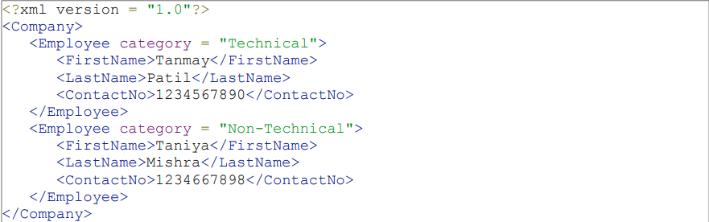
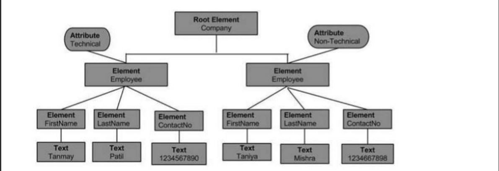

XML
What is XML?
XML stands for eXtensible Markup Language. A markup language is used to provide information about a document. Tags are added to the document to provide the extra information. HTML tags tell a browser how to display the document. XML tags give a reader some idea what some of the data means.
XML Syntax Rules
Tags are enclosed in angle brackets.
Tags come in pairs with start-tags and end-tags.
Tags must be properly nested.
Tags that do not have end-tags must be terminated by a / Tags are case sensitive.
XML in any combination of cases is not allowed as part of a tag.
Tags may not contain or &.
Tags follow Java naming conventions, except that a single colon and other characters are allowed.
They must begin with a letter and may not contain white space Documents must have a single root tag that begins the document.
An XML document has a single root node. This element is "the parent" of all other elements. The elements in an XML document form a document tree. The tree starts at the root and branches to the lowest level of the tree. The tree is a general ordered tree.
The terms parent, child, and sibling are used to describe the relationships between elements. Parent elements have children. Children on the same level are called siblings (brothers or sisters). All elements can have text content and attributes (just like in HTML). XML documents use a self-describing and simple syntax:

XML DOM
The DOM (Document Object Model) defines a standard for accessing and manipulating documents. It is a platform and
language-neutral interface that allows programs and scripts to dynamically access and update the content, structure,
and style of a document
The XML DOM defines a standard way for accessing and manipulating XML documents. It presents an XML document as a tree-structure.
All XML elements can be accessed through the XML DOM.
The XML DOM is:
- A standard object model for XML
- A standard programming interface for XML
- Platform- and language-independent
- A W3C standard
In other words: The XML DOM is a standard for how to get, change, add, or delete XML elements. This code retrieves the text value of the first element in an XML document:
txt = xmlDoc.getElementsByTagName("title")
[0].childNodes[0].nodeValue;
This example reads "books.xml" into xmlDoc and retrieves the text value of the first element in books.xml. Example Explained
xmlDoc - the XML DOM object created by the parser.
getElementsByTagName("title")[0] - get the first element
childNodes[0] - the first child of the element (the text node)
nodeValue - the value of the node (the text itself)
This example reads "books.xml" into xmlDoc and retrieves the text value of the first element in books.xml. Example Explained
XML DOM NODES
XML DOM – NODE TREE
In an XML document, the information is maintained in hierarchical structure; this hierarchical structure is referred to as the Node Tree. This hierarchy allows a developer to navigate around the tree looking for specific information, thus nodes are allowed to access. The content of these nodes can then be updated.The structure of the node tree begins with the root element and spreads out to the child elements till the lowest level. The structure of the node tree begins with the root element and spreads out to the child elements till the lowest level.
A parser is a software application that is designed to analyze a document, in our case XML document and do something specific with the information. Some of the DOM based parsers are listed in the following table
In a tree-based API like DOM, the parser traverses the XML file and creates the corresponding DOM objects. Then you can traverse the DOM structure back and forth.
Loading and Parsing XML
While loading an XML document, the XML content can come in two forms −
Content as XML file
Following example demonstrates how to load XML (node.xml) data using Ajax and Javascript when the XML content is received as an XML file. Here, the Ajax function gets the content of an xml file and stores it in XML DOM. Once the DOM object is created, it is then parsed.

XML DOM – TRAVERSING
In this chapter, we will discuss XML DOM Traversing.
We studied in the previous chapter how to load XML document and parse the thus obtained DOM object. This parsed DOM object can be traversed. Traversing is a process in which looping is done in a systematic manner by going across each and every element step by step in a node tree.
DOM - Parent Node
This property specifies the parent node as a node object.Example The following example (navigate_example.htm) parses an XML document (node.xml) into an XML DOM object. Then the DOM object is navigated to the parent node through the child node −
Execution Save this file as navigate_example.html on the server path (this file and node.xml should be on the same path in your server). In the output, we get the parent node of Employee, i.e, Company.
XML DOM - Accessing
In this chapter, we will study about how to access the XML DOM nodes which are considered as the informational units of the XML document. The node structure of the XML DOM allows the developer to navigate around the tree looking for specific information and simultaneously access the information. Accessing Nodes Following are the three ways in which you can access the nodes − By using the getElementsByTagName () method By looping through or traversing through nodes tree By navigating the node tree, using the node relationships getElementsByTagName () This method allows accessing the information of a node by specifying the node name. It also allows accessing the information of the Node List and Node List Length.
XML DOM – GET NODE
In this chapter, we will study about how to get the node value of a XML DOM object. XML documents have a hierarchy of informational units called nodes. Node object has a property nodeValue, which returns the value of the element.
Get Node Value
The method getElementsByTagName() returns a NodeList of all the Elements in document order with a given tag name.
Get Attribute ValueAttributes are part of the XML node elements. A node element can have multiple unique attributes. Attribute gives more information about XML node elements. To be more precise, they define properties of the node elements. An XML attribute is always a name-value pair. This value of the attribute is called the attribute node. The getAttribute() method retrieves an attribute value by element name.
XML DOM – SET NODE
In this chapter, we will study about how to change the values of nodes in an XML DOM object. Node value can be changed as follows − var value = node.nodeValue; If node is an Attribute then the value variable will be the value of the attribute; if node is a Text node it will be the text content; if node is an Element it will be null. Following sections will demonstrate the node value setting for each node type (attribute, text node and element). The node.xml used in all the following examples is as below −
Change Value of Text Node When we, say the change value of Node element we mean to edit the text content of an element (which is also called the text node). Following example demonstrates how to change the text node of an element.
Example The following example (set_text_node_example.htm) parses an XML document (node.xml) into an XML DOM object and change the value of an element's text node. In this case, Email of each Employee to support@xyz.com and print the values.
XML DOM – CREATE NODE
In this chapter, we will discuss how to create new nodes using a couple of methods of the document object. These methods provide a scope to create new element node, text node, comment node and attribute node. If the newly created node already exists in the element object, it is replaced by the new one. Following sections demonstrate this with examples.
Create new Element node
The method createElement() creates a new element node. If the newly created element node exists in the element object, it is replaced by the new one.
Syntax
Syntax to use the createElement() method is as follows − var_name = xmldoc.createElement("tagname"); Where, var_name − is the user-defined variable name which holds the name of new element. ("tagname") − is the name of new element node to be created.
Example The following example (createnewelement_example.htm) parses an XML document (node.xml) into an XML DOM object and creates a new element node PhoneNo in the XML document.
new_element = xmlDoc.createElement("PhoneNo"); creates the new element node x.appendChild(new_element); x holds the name of the specified child node to which the new element node is appended.
Execution
Save this file as createnewelement_example.htm on the server path (this file and node.xml should be on the same path in your server). In the output we get the attribute value as PhoneNo. Create new Text node The method createTextNode() creates a new text node. Syntax
Syntax to use createTextNode() is as follows − var_name = xmldoc.createTextNode("tagname"); Where, var_name − it is the user-defined variable name which holds the name of new text node. ("tagname") − within the parenthesis is the name of new text node to be created.